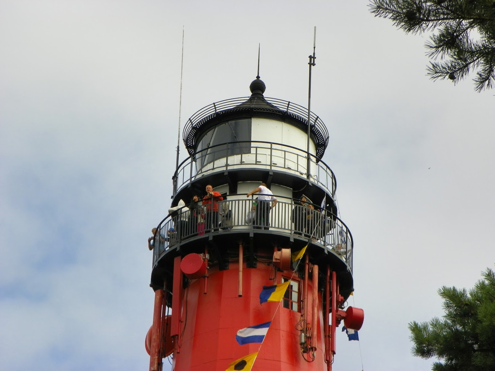
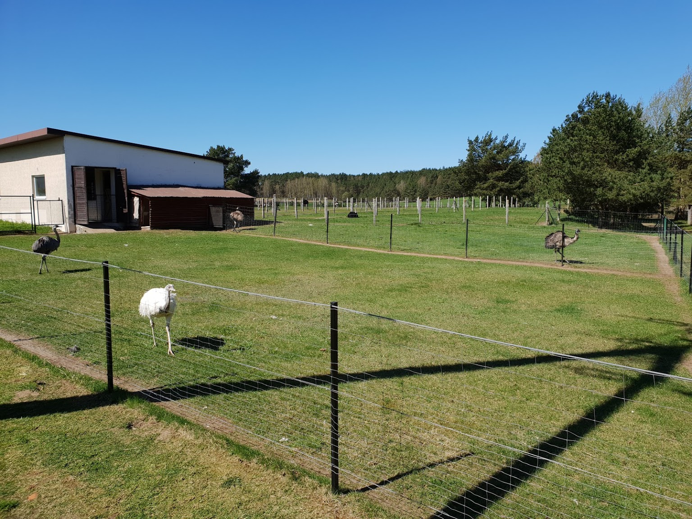
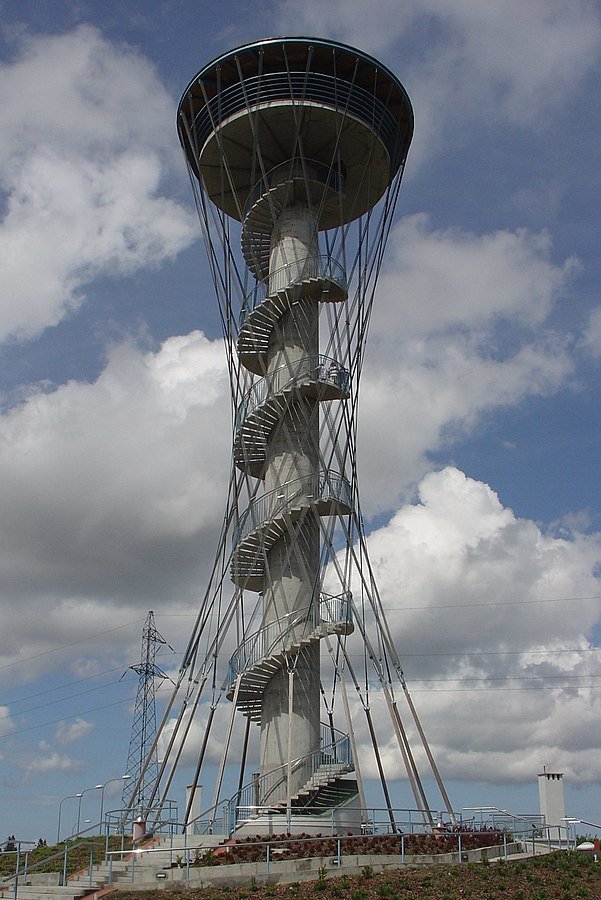

Dane o powiecie

| Siedziba | Wejherowo |
| Powierzchnia | 1285,25 km² |
| Populacja | 214 871 |
Dane kontaktowe starostwa powiatowego
| Telefon | +48 58 572 94 11 |
| Adres | ul. 3 Maja 4 84-200 Wejherowo |
| Strona | powiatwejherowski.pl |
Atrakcje turystyczne
Latarnia Morska Stilo
Latarnia Stilo usytuowana jest w okolicy wsi Stilo zwanej też Osetnik i okolo 10 km od Łeby. Na szesnastokatnej podstawie wznosi się wysoki na 33,5 metra ostroslup. Na jej szczycie znajdują się dwie galerie widokowe oraz właściwa laternia. Obiekt wybudowany w pierwszej połowie XX wieku był w swoimi czasie bardzo nowoczesny. Zasięg światła tej pięknej latarni to 23 Mm, a jego wysokość to aż 75 m n.p.m. Obok pomalowanej w trzy pasy: czarny u dołu, biały pośrodku i czerwony na górze, stoi domek latarników.
Źródło: opinia z Google MapsStrusia Farma Kniewo
 Zdjęcie autorstwa właściciela farmyFarma strusi. Nic dodać, nic ująć 😉
Źródło: własne.Kaszubskie Oko
kompleks turystyczno-rekreacyjny w Gniewinie z wieżą widokową im. Jana Pawła II na północ od górnego zbiornika wodnego Czymanowo elektrowni szczytowo-pompowej "Żarnowiec".
Źródło: wikipedia.org